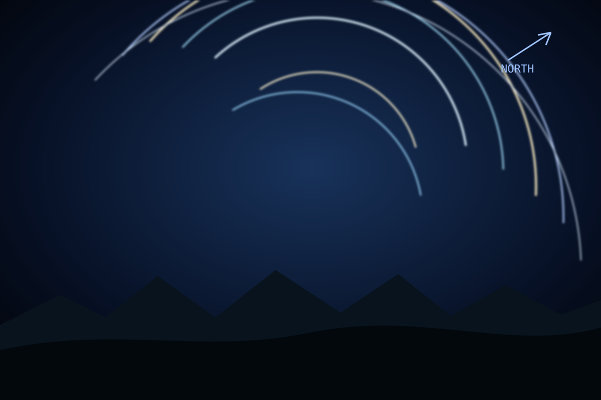

Night derived / Generated view
Star trails
A night-only composite inside the selected sky day, with source span and exclusions kept visible.
Night period / July 21
to

Night derived / Generated view
A night-only composite inside the selected sky day, with source span and exclusions kept visible.
Night period / July 21
